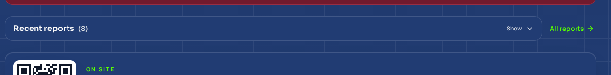
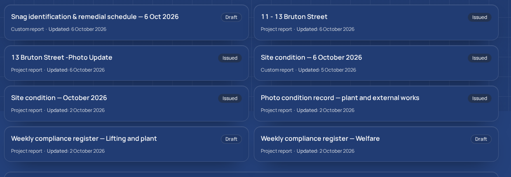

Signed in as the owner, read-only — six checks, one bug found, nothing changed
Issued7 Oct 2026
OwnerD. Hopwood
ProductinstructBrain
Build verifiedb826212 on main
CIrun 37663006724, green
Everything below was measured on the live site, after your publish.
Not read out of the code, not assumed from a green tick. I signed in as you (one-time link, never a
password), opened existing records and looked at them. I created, edited, issued and deleted nothing.
1What I did
Two passes. First the served bundle: pulled the 125 JavaScript chunks your site actually
delivers and checked the fixed code is in them, rather than in the repository. Then the screens:
a signed-in walk of the dashboard, the reports list, and two real reports, capturing every screen and
logging console errors and any request that came back 4xx or 5xx.
The served bundle carries the new copy (Add the location and details for these photographs) and the report screen prints it on a real report, not just in the repository.
2The report header stops printing the same words twiceLIVE1565772
Evidence
The suppression rule is present in the served bundle, and report SNG-2026-10-001 now prints the template name once. Before, the cover stacked the same words above the title.
3The dashboard stops hiding your workLIVEbd59448 + b826212
Evidence
Both sections open themselves with rows visible: 2 of the two toggles read Hide and none read Show, with 9 links under Recent reports and 5 under Overdue items. This needed a second fix - see below.
4A report can be started from the list of reportsLIVE8654714
Evidence
The New report control is on the page and points at /reports/quick, the one start screen.
5The two old reports that both say 001LIVE7a2e6a4
Evidence
The hand-recorded note now shows on the screen of report 2e35c5ed - the wording was in the code and never displayed. No issued document was altered.
6The walk itself0 ERRORSmeasured
Evidence
No console errors and no failed requests across every screen walked. That is the cleanest signal that nothing regressed while fixing things.
3The dashboard, before and after

Before. “Recent reports (8)” was a header strip behind a Show
control — eight reports the owner could not see without clicking. Captured on the pre-publish build.

After. The section opens itself with all eight cards visible, and
“Overdue items (10)” stays open above it. Same screen, same account, no click.
4What the walk caught that reading the code did not
The first dashboard fix was only half working, and only the walk showed it.
The section was set to open when it held something — but that decision was made once, when the screen
loaded, and the count arrives after the screen loads. So “Recent reports (8)” still started
collapsed while “Overdue items” opened. Fixed properly in b826212: until you touch the
toggle the section follows its own count, and once you touch it, your choice is what holds.
This is the whole argument for walking a live product rather than reading its source. The code looked
right; the screen was wrong.
5What this walk does not cover
No full type check exists in this project
It cannot run on my box - the container is capped at 2 GB and tsc is killed - and the CI workflow deliberately has no typecheck step. What I ran was a check over the changed files, with and without my edits: identical error sets. That is weaker than a full check.
One rule is proven by tests, not by a screen
The eyebrow is suppressed only when a report's title already opens with the template name. No report created after the relabel exists yet, so that case is covered by six unit tests rather than by looking at a live page.
Issuing a report and the emailed PDF were not exercised
By design: this was a read-only walk. Nothing was created, edited, issued or deleted, so the issue action and the delivery path are unchanged and unproven by this walk.
Desktop width only
Measured at 1440 px. Phone widths were not walked, so the narrow-screen wrapping of the new New report control is asserted from the code, not observed.
A point-in-time record
Everything here was true on 7 Oct 2026. The live site will move on; this document will not.
6Still waiting on you
Unchanged by this walk, and listed so it stays visible: where delivery bounces should be
reported (a provider or an endpoint — I cannot invent the destination); the sign-in email
sender — my recommendation is Supabase Auth pointed at Resend, which costs nothing; and
whether the two reports still showing reference 001 should be reissued (my recommendation: leave them,
they are a record of what was issued).
No database row was changed and no document was issued or
altered. Where a claim rests on a test rather than a screen, it says so above.